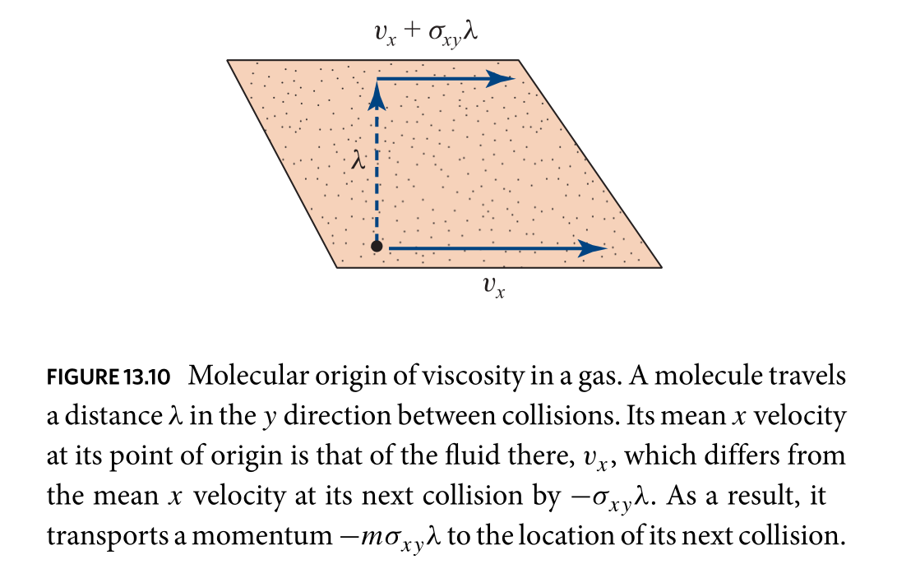

¶ in the dry water approximation you leave out the last term, ie neglect viscous
effects
¶ another (additional) approximation is assuming the fluid is incompressible, so
££
\begin{equation}
∇⦁↗v = 0
\end{equation}
££
¶ the incompressible approximation is good when flow speeds are much slower than
the speed of sound. but in real fluids the dry water approximation is not a
good approximation at all. most of the interesting dynamics come from the
viscosity term
in dry water the circulation never changes. if circulation is zero at the
beginning, it will always be (the opposite of reality)
VISCOSITY
¶ to be clear, viscosity is a measure of the internal frictional force between
adjacent layers of a liquid that are in relative motion. in a viscous liquid,
flow near the centre of a pipe is faster than at the walls.
stress is needed to sustain a viscous flow. you need a force to overcome the
friction between layers of the fluid that are in relative motion.
for a tube with constant flow rate, the strength of the compensating force
is proportional to the fluid viscosity.
¶ viscosity of a newtonian fluid doesn’t change much with rate of deformation.
¶ viscous stress tensor: a tensor to model the part of stress in a material
that’s attributed to the strain rate, the rate at which it’s deforming around
that point
¶ consider viscous drag between parallel plates. if you measure the force needed
to keep the upper plate moving, you’ll find it’s proportional to the area of
the plates and to ˝v₍0₎/d˝, where ˝d˝ is the distance between the plates
ie, the shear stress ˝F/A˝ is proportional to ˝v₍0₎/d˝
¶ microscopic difference between gases and liquids:
in a gas a molecule of mass ˝m˝ travels a distance that’s of the order of
its mean free path, ˝λ˝, before it collides
if there’s a shear in the fluid, then the molecule (travelling upwards in
the y direction, look at the diagram) will transfer momentum in the
x-direction around ˝-mλσ₍xy₎˝ between collisions

if ilya ˝n˝ molecules per unit volume moving with mean thermal speeds
˝v₍th₎˝, the transferred momentum crossing a unit area in unit time is